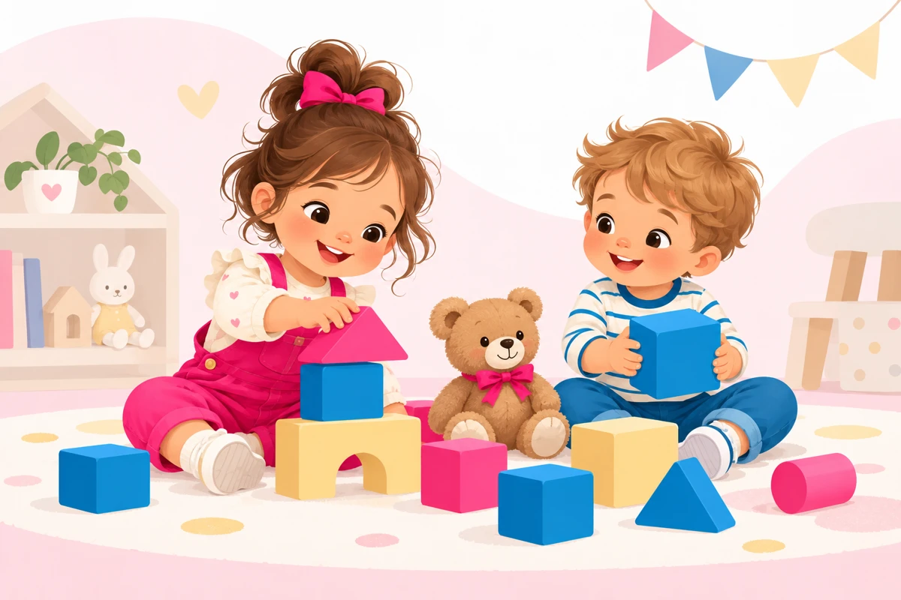
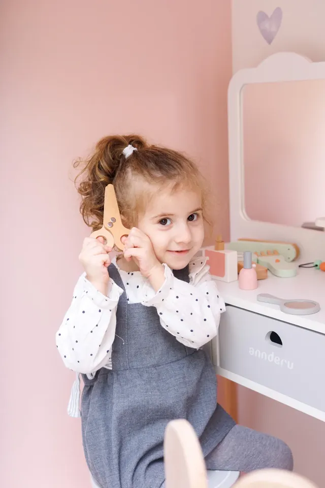
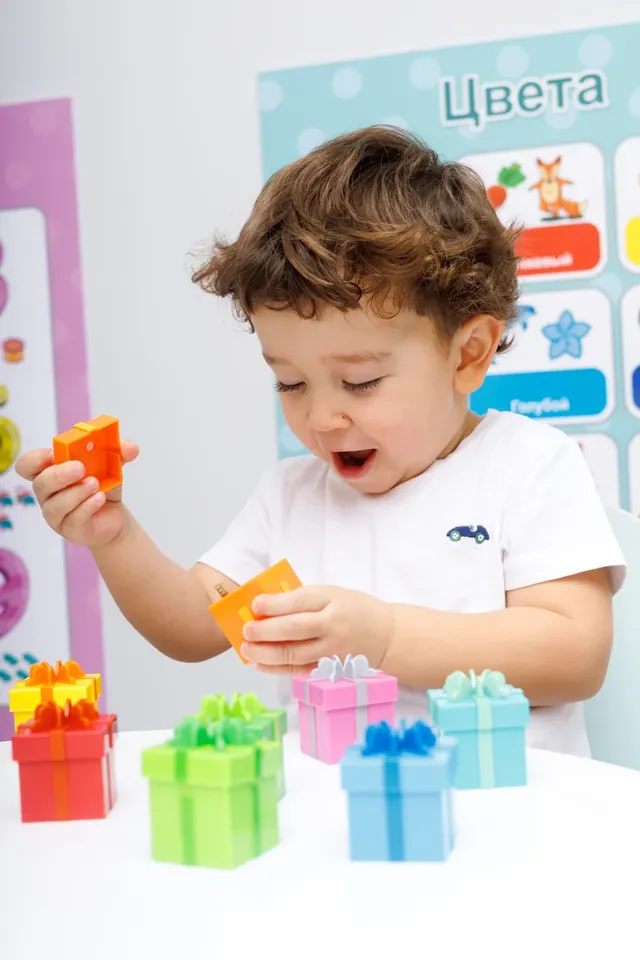
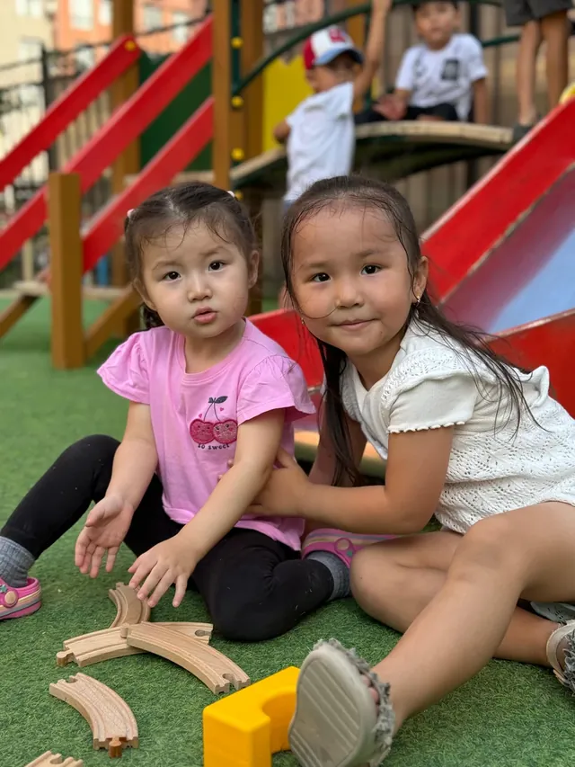
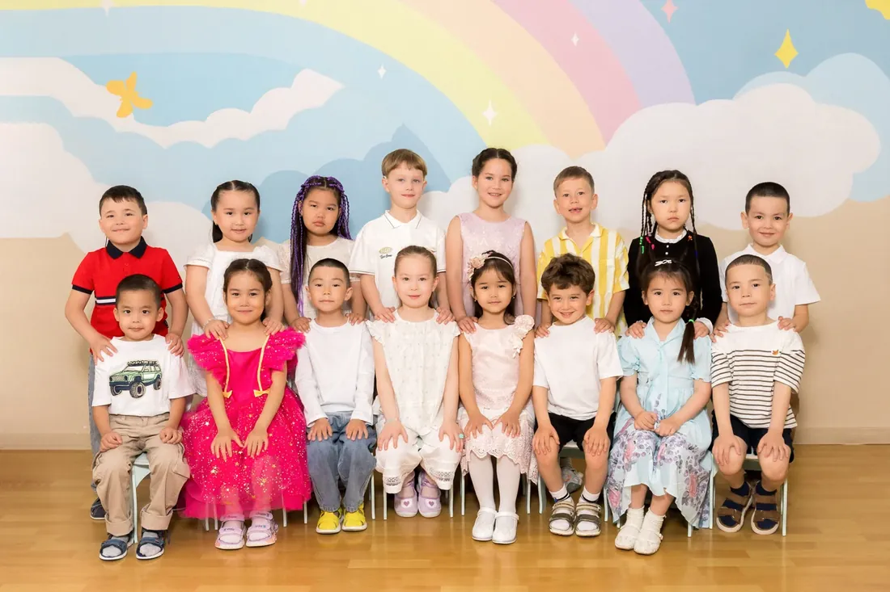
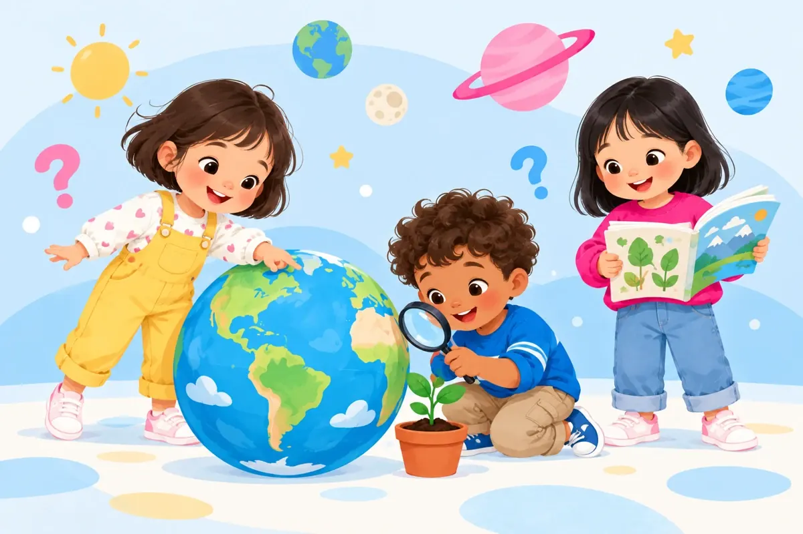

1,6–3 года
Малышарики
Ясельная группа
Частный детский сад
«Дочки-сыночки»




Играем, общаемся и открываем мир вместе. Здесь начинается знакомство с новыми друзьями и маленькими открытиями каждый день.
Описание садика готовится. Скоро здесь появится рассказ о нашем подходе, занятиях и команде.
Познакомиться с группами →Забота, развитие, питание, безопасность и внимание к особенностям каждого ребёнка.
С интересом, заботой, уважением к его индивидуальности и верой в его возможности.
Две группы для разных этапов детства.
Выберите возраст вашего ребёнка.

Ясельная группа

Старшая группа
Знакомьтесь с людьми, которые помогают детям расти, учиться и чувствовать себя уверенно.
Важная информация — в одном месте.
Фрагменты сообщений родителей. Сохранён смысл, исправлены пунктуация и опечатки.
Позвоните или напишите — обсудим знакомство с садиком.
Написать в WhatsAppНаш адресАктау, 17 микрорайон, здание 25/2
Режим работыПн–Пт, 08:00–18:00
Телефон и WhatsApp+7 747 832 35 52
Актау, 17 микрорайон, здание 25/2